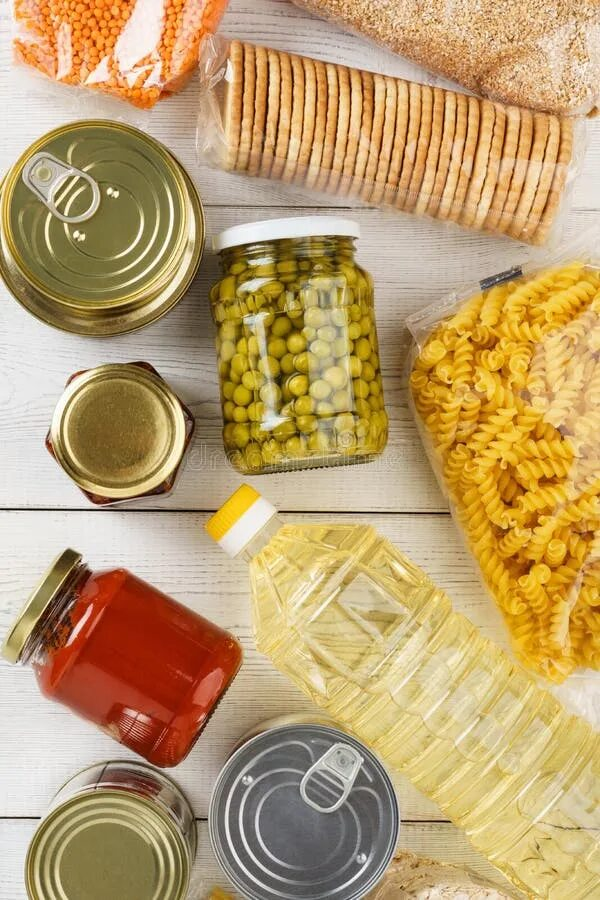
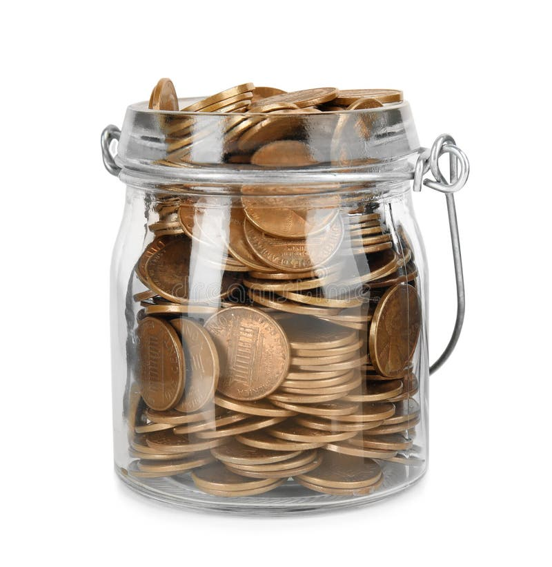

Откуда взялось правило
Правило описала Элизабет Уоррен, тогда профессор Гарвардской школы права, вместе с дочерью Амелией Уоррен Тьяги в книге «All Your Worth» 2005 года. Их идея была в том, что не нужно считать каждую копейку: достаточно следить за пропорциями.
Половина дохода уходит на то, без чего не прожить. Почти треть остаётся на то, что делает жизнь приятнее. Пятая часть откладывается. Если пропорции соблюдаются, бюджет в порядке, даже если отдельные траты кажутся лишними.
Что входит в каждую часть

- 50% — обязательное. Жильё, связь, продукты, проезд, учёба. Это траты, которые придётся сделать в любом случае.
- 30% — желания. Кафе и доставка, развлечения, подписки, одежда сверх необходимого. Без них можно прожить, но не хочется.
- 20% — накопления. Финансовая подушка, цели вроде нового ноутбука и погашение долгов, если они есть.
Граница между обязательным и желаниями у каждого своя. Проездной до университета — обязательная трата, такси в соседний квартал — уже нет.
Пример: бюджет студента
Возьмём доход 38 000 ₽ в месяц: стипендия, подработка и помощь от родителей. По правилу он делится так:
- Обязательное, 50%
- 19 000 ₽
- Желания, 30%
- 11 400 ₽
- Накопления, 20%
- 7 600 ₽
Теперь сравним с реальным октябрём. На обязательное ушло 18 080 ₽, это 48% — в пределах нормы. На желания потрачено 13 160 ₽, то есть 35%: на пять пунктов больше рекомендации, и почти всю разницу дали кафе и доставка. Отложено 6 760 ₽ — 18%, немного не дотянули до 20%.
Вывод простой: если сократить доставку на тысячу-полторы в месяц, правило выполнится полностью, и отказываться ни от чего больше не придётся.
Если доход маленький

Если живёшь только на стипендию, пропорции 50/30/20 могут выглядеть странно: половины дохода на обязательное просто не хватит. Это нормально. Правило — ориентир, а не закон.
Начни с малого: откладывай хотя бы 5% от любого поступления сразу, в день, когда пришли деньги, а не в конце месяца. Долю желаний пересматривай раз в месяц, когда видишь итоги. Когда доход вырастет, пропорции сами приблизятся к рекомендованным.
Как проверить себя
В разделе «Бюджеты» отметь, какие категории для тебя обязательные. Аналитика сама посчитает доли за месяц и покажет, где ты выходишь за рамки.
Открыть аналитику